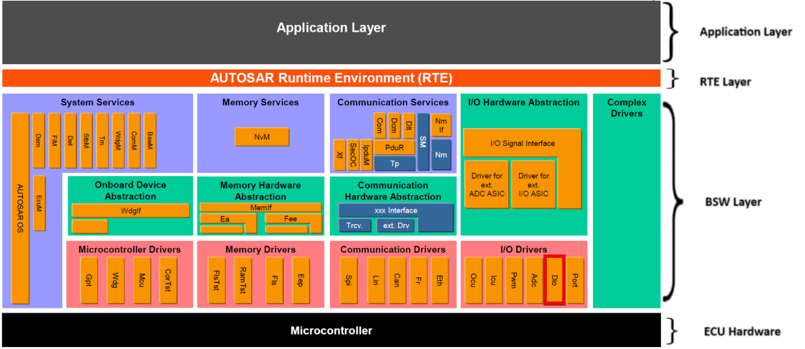
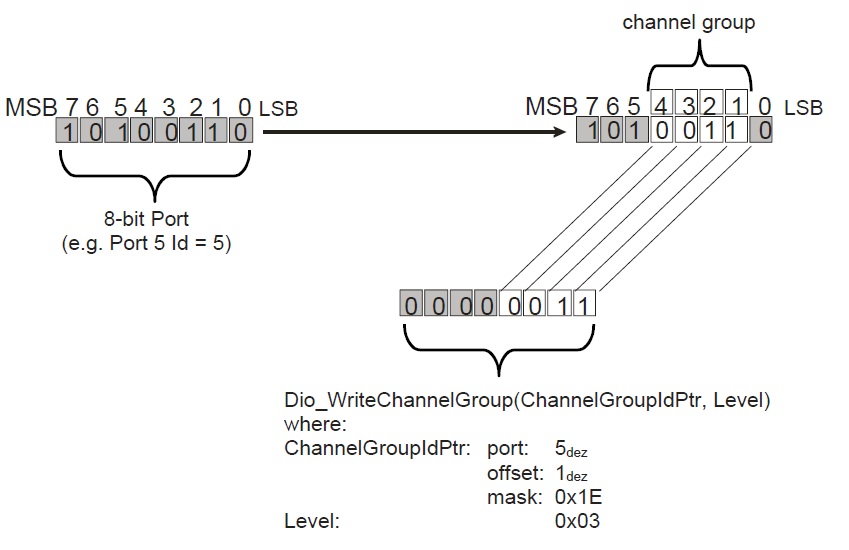
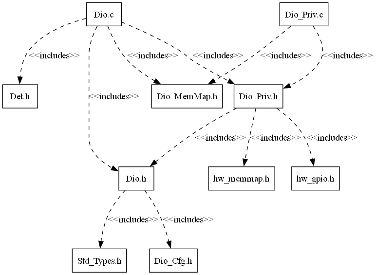
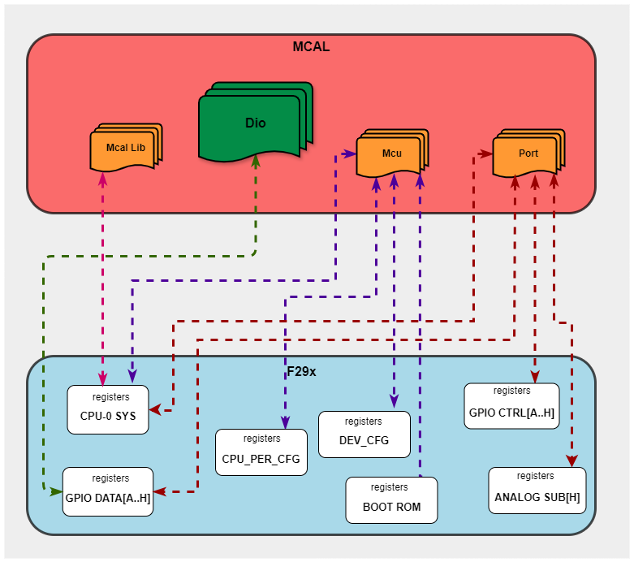

4.2. DIO Module
4.2.1. Acronyms and Definitions
Abbreviation/Term |
Explanation |
|---|---|
AUTOSAR |
Automotive Open System Architecture |
RTE |
Runtime Environment |
BSW |
Basic Software |
GPIO |
General Purpose Input Output |
MCAL |
Micro controller Abstraction Layer |
API |
Application Programming Interface |
DET |
Default Error Tracer |
HW |
Hardware |
SW |
Software |
DIO |
Digital Input Output |
I/O |
Input/Output |
ID |
Identifier |
4.2.2. Introduction
The DIO module provides interfaces to external peripherals by abstracting the input and output pins on the micro controller device, Following sections highlight key aspects of this implementation which would be of interest to an integrator.

Fig. 4.4 DIO MCAL AUTOSAR
This document details AUTOSAR BSW DIO module implementation
Supported AUTOSAR Release |
4.3.1 |
|---|---|
Supported Configuration Variants |
Pre-Compile & Link Time |
Vendor ID |
DIO_VENDOR_ID (44) |
Module ID |
DIO_MODULE_ID (120) |
4.2.3. Functional Overview
The DIO Driver abstracts the access to the micro controller’s hardware pins. Furthermore, it allows the grouping of those pins. This module works on pins and ports which are configured by the PORT driver for this purpose. For this reason, there is no configuration and initialization of this port structure in the DIO Driver.
The DIO Modules expects that pin mux is set correctly to configure the GPIO pins for GPIO mode. This is done by the PORT driver. The pin direction shall also be set by the PORT driver.
The DIO Driver provides services for reading and writing to/from
DIO Channels - Represents a single general-purpose digital input/output pin.
DIO Ports - Represents several DIO channels that are grouped by hardware (typically controlled by one hardware register).
DIO Channel Groups - A channel group is a formal logical combination of several adjoining DIO channels within a DIO port. A DIO channel group shall belong to one DIO port. Below picture describes this.
The basic behavior of this driver is synchronous.

Fig. 4.5 Schematic description of a ChannelGroup
4.2.4. Hardware Features
4.2.4.1. Hardware Features supported
Features Supported at a high level are:
Un-Buffered Read & Write of GPIO Pin Levels
Un-Buffered Read & Write of internal general purpose I/O ports
Un-Buffered Read & Write of subset of internal general purpose I/O ports
Flipping GPIO Pin Levels
For the device there are up to 8 Possible I/O Ports.
Port |
ChannelId |
Port ID |
|---|---|---|
Port A |
0 - 31 |
0 |
Port B |
32 - 63 |
1 |
Port C |
64 - 95 |
2 |
Port D |
96 - 127 |
3 |
Port E |
128 - 159 |
4 |
Port F |
160 - 191 |
5 |
Port G |
192 - 223 |
6 |
Port H |
224 - 255 |
7 |
Note
The number of pins shown above may vary depending on the specific device being used. For accurate and up-to-date information, please consult the device’s datasheet.
4.2.4.2. Not supported Features
None
4.2.4.3. Non compliance
DIO Channel validity will be checked against maximum allowed DIO channels which is 256
Below AUTOSAR design requirement is not supported for Dio Driver :
SWS_Dio_00084 : If the micro-controller does not support the direct read-back of a pin value, the Dio module’s read functions shall provide the value of the output register, when they are used on a channel which is configured as an output channel
Rejection Reason : Direct read back of a pin value is achieved using GPyDAT register, Hence this requirement is rejected.
4.2.5. Source files
📦f29h85x_mcal
┣ 📂build
┣ 📂docs
┣ 📂drivers
┃ ┣ 📂BSW_Stubs
┃ ┣ 📂Can
┃ ┣ 📂Dio
┃ ┃ ┣ 📂include
┃ ┃ ┃ ┣ 📜Dio.h : Contains the API declarations of the DIO driver to be used by upper layers.
┃ ┃ ┃ ┗ 📜Dio_Priv.h : contains the private functions declarations
┃ ┃ ┣ 📂src
┃ ┃ ┃ ┣ 📜Dio.c : contains the implementation of the API’s for DIO driver.
┃ ┃ ┃ ┗ 📜Dio_Priv.c : contains the implementation for DIO private functions which will directly interact with hardware registers.
┃ ┃ ┗ 📜CMakeLists.txt
┃ ┣ 📂Gpt
┃ ┣ 📂hw_include
┃ ┣ 📂Mcal_Lib
┃ ┣ 📂Mcu
┃ ┗ 📂Port
┣ 📂examples
┣ 📂plugins
┣ 📜CMakeLists.txt
┗ 📜CMakePresets.json

Fig. 4.6 Dio Header File Structure
4.2.6. Module requirements
4.2.6.1. Memory Mapping
Will be added in later release
4.2.6.2. Scheduling
There is no scheduling functions in Dio
4.2.6.3. Error handling
4.2.6.3.1. Development Error Reporting
Development errors are reported to the DET using the service Det_ReportError(), when enabled. The driver interface contains the MACRO declaration of the error codes to be returned.
4.2.6.4. Error codes
Type of Error |
Related Error code |
Value (Hex) |
|---|---|---|
API parameter checking: Invalid channel requested |
DIO_E_PARAM_INVALID_CHANNEL_ID |
0x0A |
API parameter checking: Invalid port requested |
DIO_E_PARAM_INVALID_PORT_ID |
0x14 |
API parameter checking: Invalid channel group requested |
DIO_E_PARAM_INVALID_GROUP |
0x1F |
API service called with a NULL pointer |
DIO_E_PARAM_POINTER |
0x20 |
4.2.7. Used resources
4.2.7.1. Interrupt Handling
There are no Interrupts in Dio
4.2.7.2. Instance support
CPU instances |
supported |
|---|---|
CPU 1 |
YES |
CPU 2 |
NO |
CPU 3 |
NO |
4.2.7.3. Hardware-Software Mapping
Below image shows Dio driver Hardware-Software mapping. For more information related to HW/SW mapping, refer the F29x Reference Manual.

Fig. 4.7 Dio HW/SW Mapping
4.2.8. Integration description
4.2.8.1. Dependent modules
4.2.8.1.1. DET
This implementation depends on the DET in order to report development errors The detection of development errors is configurable (ON / OFF), The switch DIO_DEV_ERROR_DETECT will activate or deactivate the detection of all development errors.
4.2.8.1.2. PORT
PORT Module is required to initialize Pin configurations like MUX mode, Pin direction and more
4.2.8.1.3. MCU
MCU Module is required to initialize all the clock to be used by different peripherals
4.2.8.2. Multi-core and Resource allocator
Not Supported
4.2.9. Configuration
The Dio Driver implementation supports multiple configuration variants, namely Dio Pre-Compile config and Link-Time config. the driver expects generated Dio_Cfg.h to be present as input file. The associated dio driver configuration generated files are Dio_Cfg.c or Dio_Lcfg.c
The generated configuration files should not be modified manually. The config tool Elektrobit Tresos should be used to modify the configuration files.
4.2.9.1. DioConfig
This container contains the configuration parameters and sub containers of the AUTOSAR DIO module.
4.2.9.1.1. DioPort
Configuration of individual DIO ports, consisting of channels and possible channel groups.
4.2.9.1.1.1. DioPortId
Item |
|
|---|---|
Name |
DioPortId |
Description |
Numeric identifier of the DIO port. Not all MCU ports may be used for DIO, thus there may be “gaps” in the list of all IDs. This value will be |
Origin |
AUTOSAR_ECUC |
Post-Build-Variant-Value |
false |
Value-Configuration-Class |
– |
Link-Time |
VARIANT-LINK-TIME |
Pre-Compile-Time |
VARIANT-PRE-COMPILE |
Default-value |
0 |
Max-value |
7 |
Min-value |
0 |
4.2.9.1.2. DioChannel
Configuration of an individual DIO channel.
4.2.9.1.2.1. DioChannelId
Item |
|
|---|---|
Name |
DioChannelId |
Description |
Channel Id of the DIO channel. This value will be assigned to the symbolic names. |
Origin |
AUTOSAR_ECUC |
Post-Build-Variant-Value |
false |
Value-Configuration-Class |
– |
Link-Time |
VARIANT-LINK-TIME |
Pre-Compile-Time |
VARIANT-PRE-COMPILE |
Default-value |
0 |
Max-value |
255 |
Min-value |
0 |
4.2.9.1.2.2. DioPinNumRef
Item |
|
|---|---|
Name |
DioPinNumRef |
Description |
Reference to the Port Pin configuration, which is set in the PORT driver configuration |
Origin |
Texas Instruments |
Post-Build-Variant-Value |
false |
Value-Configuration-Class |
– |
Link-Time |
VARIANT-LINK-TIME |
Pre-Compile-Time |
VARIANT-PRE-COMPILE |
4.2.9.1.3. DioChannelGroup
Definition and configuration of DIO channel groups. A channel group represents several adjoining DIO channels represented by a logical group.
4.2.9.1.3.1. DioChannelGroupIdentification
Item |
|
|---|---|
Name |
DioChannelGroupIdentification |
Description |
The DIO channel group is identified in DIO API by a pointer to a data structure (of type Dio_ChannelGroupType). That data structure contains the channel group information. |
Origin |
AUTOSAR_ECUC |
Post-Build-Variant-Value |
false |
Value-Configuration-Class |
– |
Link-Time |
VARIANT-LINK-TIME |
Pre-Compile-Time |
VARIANT-PRE-COMPILE |
Default-value |
Dio_ChannelGroup |
4.2.9.1.3.2. DioPortMask
Item |
|
|---|---|
Name |
DioPortMask |
Description |
This shall be the mask which defines the positions of the channel |
Origin |
AUTOSAR_ECUC |
Post-Build-Variant-Value |
false |
Value-Configuration-Class |
– |
Link-Time |
VARIANT-LINK-TIME |
Pre-Compile-Time |
VARIANT-PRE-COMPILE |
Default-value |
4294967295 |
Max-value |
4294967295 |
Min-value |
0 |
4.2.9.1.3.3. DioPortOffset
Item |
|
|---|---|
Name |
DioPortOffset |
Description |
The position of the Channel Group on the port, counted |
Origin |
AUTOSAR_ECUC |
Post-Build-Variant-Value |
false |
Value-Configuration-Class |
– |
Link-Time |
VARIANT-LINK-TIME |
Pre-Compile-Time |
VARIANT-PRE-COMPILE |
Default-value |
0 |
Max-value |
31 |
Min-value |
0 |
4.2.9.2. DioGeneral
General DIO module configuration parameters.
4.2.9.2.1. DioDevErrorDetect
Item |
|
|---|---|
Name |
DioDevErrorDetect |
Description |
Switches the development error detection and notification on or off. |
Origin |
AUTOSAR_ECUC |
Post-Build-Variant-Value |
false |
Value-Configuration-Class |
– |
Link-Time |
VARIANT-LINK-TIME |
Pre-Compile-Time |
VARIANT-PRE-COMPILE |
Default-value |
false |
4.2.9.2.2. DioFlipChannelApi
Item |
|
|---|---|
Name |
DioFlipChannelApi |
Description |
Adds / removes the service Dio_FlipChannel() from the code. |
Origin |
AUTOSAR_ECUC |
Post-Build-Variant-Value |
false |
Value-Configuration-Class |
– |
Link-Time |
VARIANT-LINK-TIME |
Pre-Compile-Time |
VARIANT-PRE-COMPILE |
Default-value |
true |
4.2.9.3. Steps To Configure Dio Module
Open EB Tresos configurator tool and load Port and Dio modules
Open PORT module plugin and configure required pins as GPIO’s
Open DIO module plugin, Select the Config Variant (Pre-compile/Link-Time)
In DIO module plugin, Create port container, add Channels by referring port pins configured in port plugin
Add channel groups
Save the configuration and generate the configuration.
4.2.10. Examples
The example application demonstrates use of Dio module, the list below identifies key steps performed the example.
4.2.10.1. Overview
Dio_Example_Read_Write_All
EcuM_Init()
Initializes clock to 200 MHz using Mcu_Init()
Initializes pins as GPIO Outputs and GPIO Inputs using Port_Init()
Perform channel read/write on initialized channels
Perform channel group read/write on initialized channel group
Perform port read/write on initialized ports
Perform flip channel on initialized channel
4.2.10.2. Setup required to run example
Install Code Composer Studio(CCS)
Install latest C29 compiler
4.2.10.3. How to run examples
Open CCS and Import Dio example
Connect the hardware and power up
Build project then debug project
Connect the UART set up to check the log on serial console
4.2.10.4. Sample Log
Sample Application - STARTS !!!
DIO MCAL Version Info
---------------------
Vendor ID : 44
Module ID : 120
SW Major Version : 1
SW Minor Version : 0
SW Patch Version : 3
Test A. Write and Read Channel
-------------------------------
Reading channel 4
Writing High to channel 4
Reading channel 4
Writing Low to channel 4
Reading channel 4
DIO Test A :Service API: Write/Read Channel completed
Test B. Write/Read Port
----------------------------
Writing on to Port 0
Reading from Port 0
Test B. Write/Read Port completed
Test C. Write/Read Channel group
----------------------------
Writing on to channel group 0
Reding from channel group 0
DIO Test C :Service API: Write/Read Channel group completed
Test D. Flip Channel
---------------------
Reading from channel 8
Flipping channel 8 level
PASS: channel 8 level flipped
DIO Test D :Service API: Flip Channel completed
Dio_Example_Read_Write_All: Sample Application - Completes successfully !!!
4.2.10.5. File Structure
📦f29h85x_mcal
┣ 📂build
┣ 📂docs
┣ 📂drivers
┣ 📂examples
┃ ┣ 📂AppUtils
┃ ┣ 📂Can
┃ ┣ 📂DeviceSupport
┃ ┣ 📂Dio
┃ ┃ ┗ 📂Dio_Example_Read_Write_All
┃ ┃ ┃ ┣ 📂CCS
┃ ┃ ┃ ┃ ┗ 📜Dio_Example_Read_Write_All.projectspec
┃ ┃ ┃ ┣ 📂Dio_Example_Read_Write_Config
┃ ┃ ┃ ┃ ┣ 📂config
┃ ┃ ┃ ┃ ┃ ┣ 📜Dem.xdm
┃ ┃ ┃ ┃ ┃ ┣ 📜Dio.xdm: Generated EB Tresos config file in .xdm format
┃ ┃ ┃ ┃ ┃ ┣ 📜EcuM.xdm
┃ ┃ ┃ ┃ ┃ ┣ 📜Mcu.xdm
┃ ┃ ┃ ┃ ┃ ┣ 📜Os.xdm
┃ ┃ ┃ ┃ ┃ ┗ 📜Port.xdm
┃ ┃ ┃ ┃ ┣ 📂include
┃ ┃ ┃ ┃ ┃ ┣ 📜Dem_Cfg.h
┃ ┃ ┃ ┃ ┃ ┣ 📜Dio_Cfg.h : Contains the generated pre-compiler configuration.
┃ ┃ ┃ ┃ ┃ ┣ 📜EcuM_Cfg.h
┃ ┃ ┃ ┃ ┃ ┣ 📜Mcu_Cfg.h
┃ ┃ ┃ ┃ ┃ ┣ 📜Os_Cfg.h
┃ ┃ ┃ ┃ ┃ ┗ 📜Port_Cfg.h
┃ ┃ ┃ ┃ ┣ 📂src
┃ ┃ ┃ ┃ ┃ ┣ 📜Dem_Cfg.c
┃ ┃ ┃ ┃ ┃ ┣ 📜Dio_Lcfg.c : Contains the pre-build configuration parameters.
┃ ┃ ┃ ┃ ┃ ┣ 📜EcuM_Cfg.c
┃ ┃ ┃ ┃ ┃ ┣ 📜Mcu_PBcfg.c
┃ ┃ ┃ ┃ ┃ ┣ 📜Os_Cfg.c
┃ ┃ ┃ ┃ ┃ ┗ 📜Port_PBcfg.c
┃ ┃ ┃ ┃ ┗ 📜CMakeLists.txt
┃ ┃ ┃ ┣ 📜CMakeLists.txt
┃ ┃ ┃ ┗ 📜Dio_Example_Read_Write_All.c
┃ ┣ 📂Gpt
┃ ┣ 📂Mcu
┃ ┣ 📂Port
┣ 📂plugins
┣ 📜CMakeLists.txt
┗ 📜CMakePresets.json
Note
Either Dio_Lcfg.c OR Dio_Cfg.c will be present based on selected config variant by user